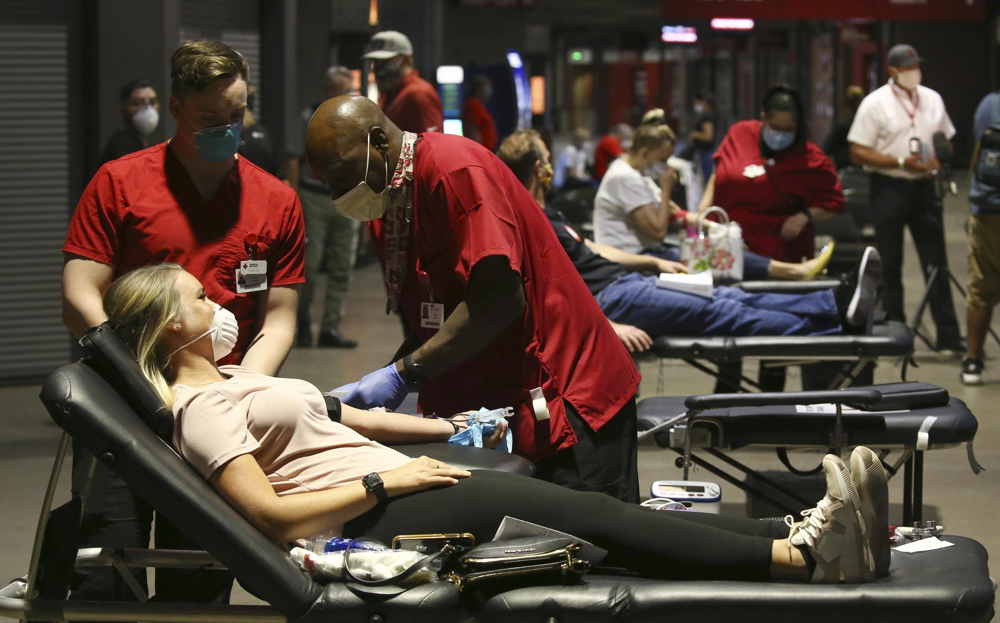
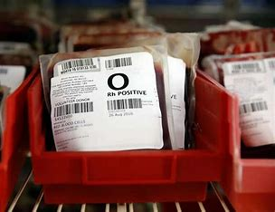

ULAB Blood Bank
Donate blood & save life
Our recent works:

ULAB Blood Bank in news!

Top Donors
The Blood Donation Process
It's simple and easy.The blood donation process from the time you arrive until the time you leave takes about an hour. The donation itself is only about 8-10 minutes on average.
Health History
1. You will answer a few questions about your health history and places you have traveled, during a private and confidential interview. 2. You will tell us about any prescription and/or over the counter medications that may be in your system. 3. We will check your temperature, pulse, blood pressure and hemoglobin level.
Your Donation
If you are donating whole blood, we will cleanse an area on your arm and insert a brand new sterile needle for the blood draw. (This
feels like a quick pinch and is over in seconds.)
Other types of donations, such as platelets, are made using an apheresis
machine which will be connected to both arms.
A whole blood donation takes about 8-10 minutes, during which you will be seated
comfortably or lying down.
When approximately a pint of whole blood has been collected, the donation is complete and a staff
person will place a bandage on your arm.
For platelets, the apheresis machine will collect a small amount of blood, remove the
platelets, and return the rest of the blood through your other arm; this cycle will be repeated several times over about 2 hours.
Refreshment and Recovery
After donating blood, you will have a snack and something to drink in the refreshment area. You will leave after 10-15 minutes and continue your normal routine. Enjoy the feeling of accomplishment knowing you are helping to save lives. Take a selfie, or simply share your good deed with friends. It may inspire them to become blood donors.